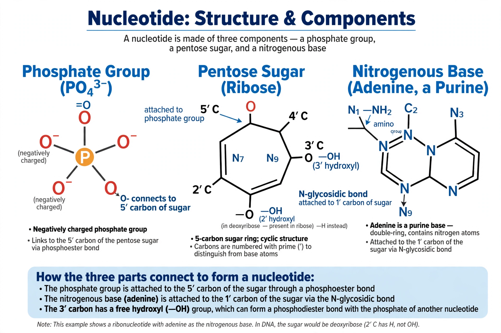

From Wikipedia, the free encyclopedia
| Nucleotide | |
|---|---|
 A nucleotide consists of a nucleobase, a pentose sugar and one or more phosphate groups | |
| Components | Nitrogenous base, pentose sugar, phosphate group(s) |
| Polymer | Nucleic acids (DNA and RNA) |
| Examples | ATP, GTP, cAMP, NAD+, FAD |
Nucleotides are organic molecules composed of a nitrogenous base, a five-carbon (pentose) sugar and one or more phosphate groups. They are the monomeric building blocks of the nucleic acids DNA and RNA, and they also serve many other roles in the cell: adenosine triphosphate (ATP) is the principal carrier of chemical energy, guanosine triphosphate (GTP) powers signalling and protein synthesis, and cyclic AMP acts as a second messenger. A molecule consisting of just the base and sugar, without phosphate, is called a nucleoside.
The nitrogenous bases are of two families: the double-ringed purines (adenine and guanine) and the single-ringed pyrimidines (cytosine, thymine and uracil). The sugar is ribose in RNA and 2-deoxyribose in DNA. Phosphate groups attach to the 5′ carbon of the sugar; nucleotides may carry one (monophosphate), two (diphosphate) or three (triphosphate) phosphates. In nucleic acid chains, nucleotides are joined by phosphodiester bonds between the 3′ carbon of one sugar and the 5′ phosphate of the next, giving the strand a direction (5′ to 3′).
Nucleoside triphosphates are the activated precursors from which polymerases build DNA and RNA. ATP hydrolysis drives energy-requiring processes throughout the cell. Nucleotide derivatives include the coenzymes NAD+, FAD and coenzyme A, and the signalling molecules cAMP and cGMP. Defects in nucleotide metabolism cause disease — most famously gout, which results from accumulation of uric acid, the end product of purine breakdown in humans.
Cells make nucleotides by de novo synthesis from amino acids, ribose phosphate and simple precursors, or recycle bases and nucleosides through salvage pathways. Nucleotides are named from their base and phosphate count: for example, adenosine monophosphate (AMP), cytidine diphosphate (CDP) and thymidine triphosphate (TTP). In DNA sequencing and genomics, individual positions in a sequence are often simply called nucleotides or "bases".
The Swiss biochemist Friedrich Miescher isolated a phosphorus-rich substance, "nuclein", from cell nuclei in 1869. Phoebus Levene later proposed the (incorrect) tetranucleotide hypothesis of DNA structure, and Albrecht Kossel won the 1910 Nobel Prize for work on the constituent bases. The Meselson–Stahl experiment of 1958 used nucleotide labelling with heavy nitrogen to demonstrate how DNA replicates.